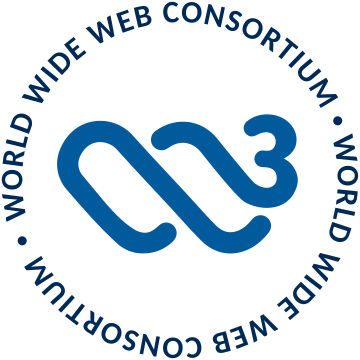

New W3C Community Group
High Assurance Profile
for W3C VCDM 2.0
vc-haip
Verifiable credentials for decisions with legal or economic effect, including evidence that AI agents and robots act on.

New W3C Community Group
vc-haip
Verifiable credentials for decisions with legal or economic effect, including evidence that AI agents and robots act on.
Community Group reports are not W3C Standards.